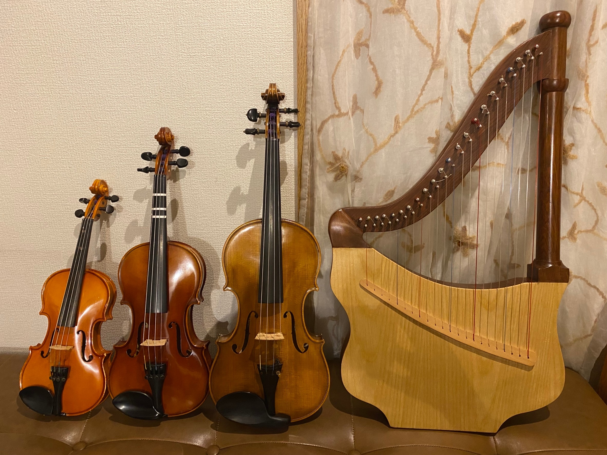
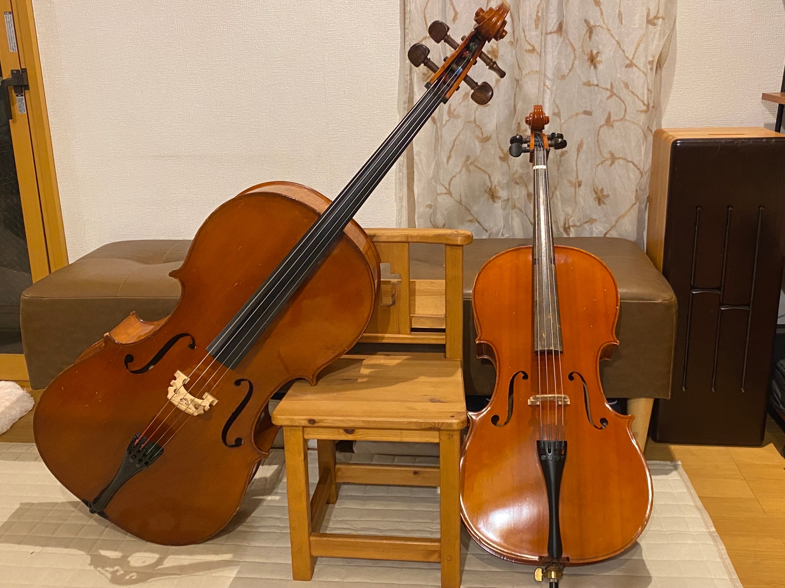
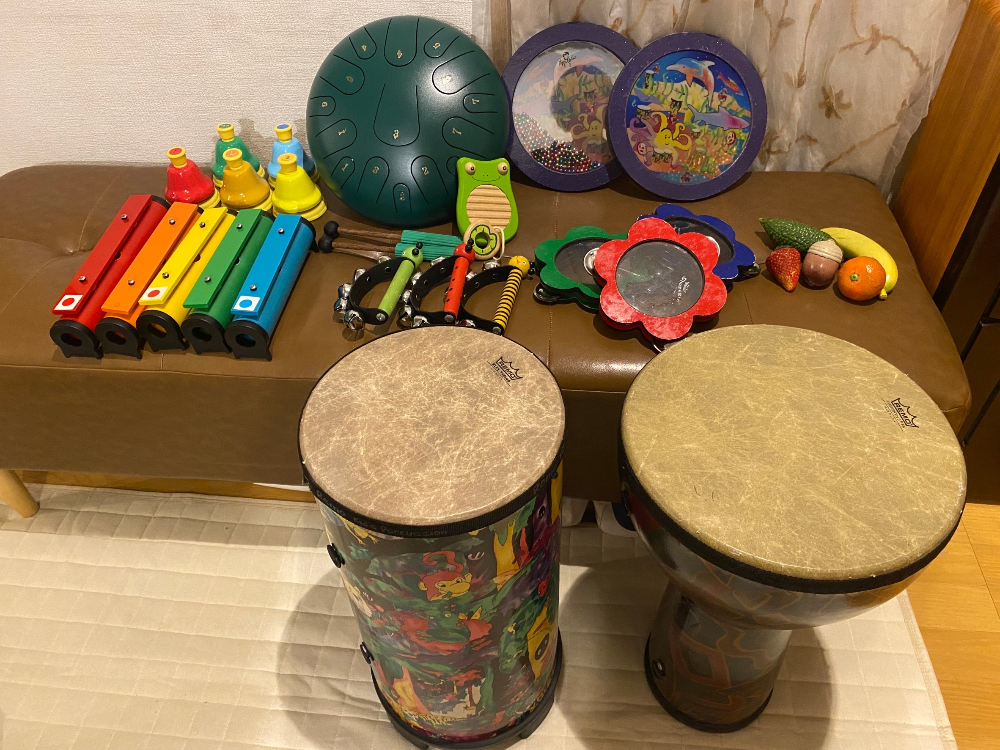
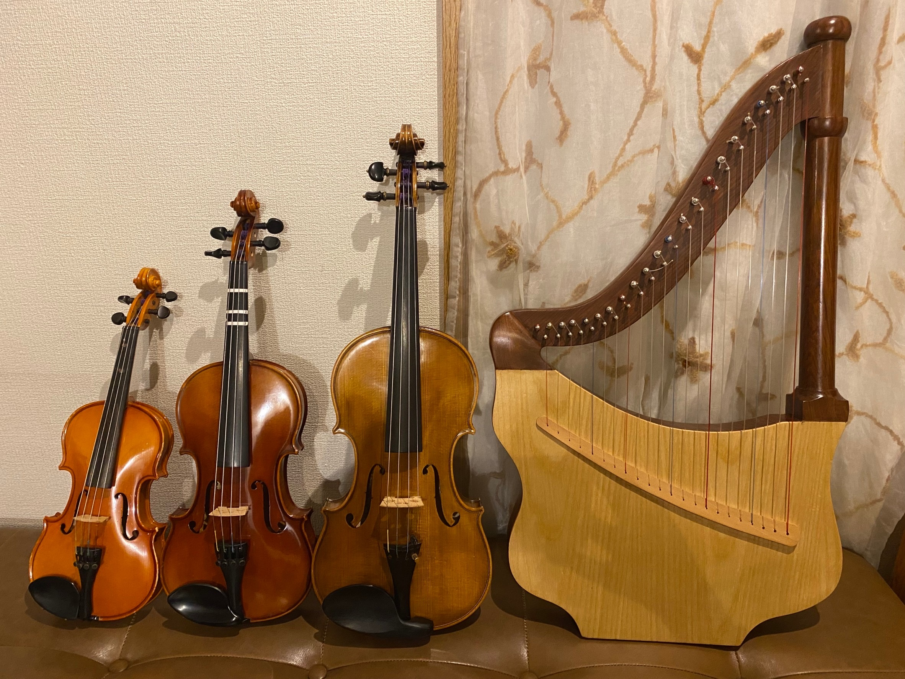
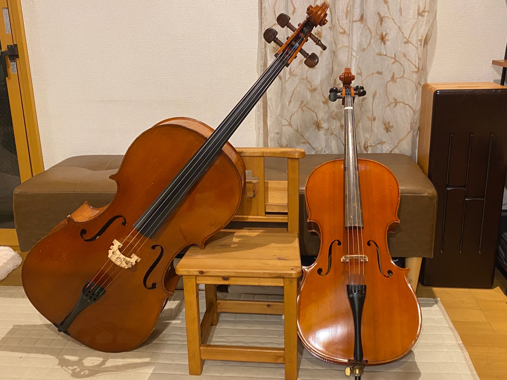
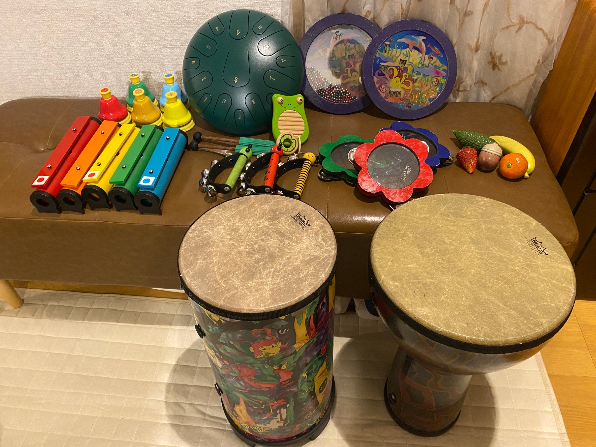

「sound village おんがくばたけ」は、音楽の楽しさ、楽器で表現する喜びを、たくさんの方に体験
してもらえる場になるように2000年に開設した音楽教室です。現在では、お子さんから大人の方、
ハンディのある方もない方も、お好きな楽器で音楽を表現して楽しむことができます。
楽器の音を生で聴くことは、脳への直接的なアプローチとなり、身体中の神経に働きかけると言われ
ています。そして楽器を演奏することは、視覚、聴覚、触覚など多感覚からの情報を受け止め、豊か
な刺激となります。このような音楽の特性を用いて、お子さんの成長や大人の方の楽しく豊かな時間
を過ごすお手伝いができたらと考えています。
無料の体験レッスンもしておりますので、ぜひ一度、お気軽にお申し込みください。
《プロフィール》
荒井 真理子 (あらい まりこ)
大阪大学芸術学部音楽学科卒業
日本音楽療法学会認定音楽療法士
sound village おんがくばたけ主宰
おんがくたいルーチェ セラピスト
たわだリハビリクリニック音楽療法室クレール セラピスト
児童福祉センターみどり学園 音楽療法セラピスト
名古屋市西部地域療育センター 音楽療法セラピスト
音楽療法では、ベル等の小楽器、ドラム等の大型打楽器、ピアノやメタルホーン等のメロディ楽器、
ヴァイオリンやチェロ等の弦楽器と、さまざまな異なる奏法、音色を持つ楽器でのやりとりを積み重ね、
コミュニケーション力や模倣の力を育み、豊かな表現力を引き出します。楽しい、嬉しいという豊
かな感情の育みを大切に取り組みます。
ピアノを弾くことが楽しい、嬉しいと思ってもらうことを大事にしながら、一人ひとりの成長に合わ
せてレッスンします。演奏に必要な音楽の基礎を学びながら、クラシックやポピュラーなどお好
きなジャンルの音楽を楽しむことができます。
ヴァイオリンやチェロに興味はあるけど、触れる機会がなかったという方も、楽器の構え方や弓の
持ち方、鳴らし方などの基本を学びながら、クラシックやポピュラー等お好きな曲を弾いて楽
しむことができます。
楽器をお持ちでない方は、レッスン時にこちらの楽器をお貸しできます。
【月謝額】
《音楽療法コース・ピアノコース》1回30分の個人レッスン（月謝制）
♪月2回 5500円 ♪月3回 6500円 ♪月4回 7500円
《大人の初めて弦楽器コース》（回数制）
♪1回30分 1500円 ♪1回60分 3000円
☆楽器レンタル料 1回 300円
体験レッスンのお申し込みや、ご質問等ありましたら
下記の方法からお気軽にお問い合わせください。
LINEでのお問い合わせ
下記QRコードから友だち追加をお願いします
ー
お電話でのお問い合わせ
ー
000-0000-0000
受付時間
平日・土 10:00〜18:00
現在はお電話での対応をしておりません
申し訳ありませんがLINEの方から
お問い合わせくださいますようお願いします